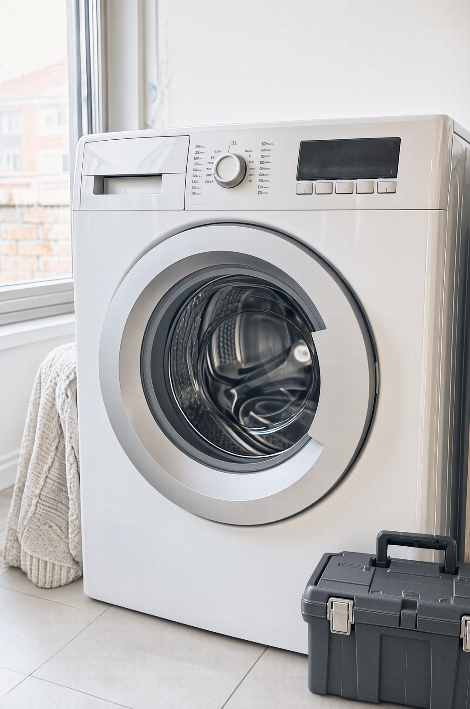

@@include("html/breadcrumbs.html", {"parent": "", "parent_href": "", "current": "Guides"})
What fails,
Guides · San Diego County
What fails,
and what it costs to fix.
Eight guides from the technicians who run the calls: the faults we meet most often, the checks worth doing before you ring us, and the published ranges behind every quote. No buying advice, no brand cheerleading — just what the meter, the part number and the invoice say.

All guides
Appliance faults,
written down properly.
Every guide names the appliance, the part that usually fails and the range we quote for the repair. Where a fault can be checked at home without tools, the steps are listed.
8 guides · updated November 2026
-
@@loop("html/guide-card.html", [
{
"topic": "Diagnostics",
"title": "Washer won't drain: pump, hose or pressure switch.",
"text": "A drum full of water is one of four failures. The order to test them in, and the point where the repair stops making sense.",
"date": "November 4, 2026",
"read": "6 min read",
"image": "img/index/services-v2/services-image-4",
"alt": "Front-load washer with the drain filter housing opened on a service call",
"href": "guide.html"
},
{
"topic": "Costs",
"title": "What the $89 diagnostic actually covers.",
"text": "Twenty minutes of testing, a pressure reading, a part number and a price before anything is ordered — and the fee is credited toward the repair.",
"date": "October 28, 2026",
"read": "5 min read",
"image": "img/index/services/services-image-2",
"alt": "Multimeter and pressure gauges laid out beside a service invoice",
"href": "guide.html"
},
{
"topic": "Maintenance",
"title": "Cleaning condenser coils: the 20-minute job that pays for itself.",
"text": "Dust on the coil is the cheapest fault we find. How to reach it, what to use, and the running cost of leaving it alone.",
"date": "October 20, 2026",
"read": "4 min read",
"image": "img/index/services-v2/services-image-9",
"alt": "Condenser coils behind a refrigerator after cleaning",
"href": "guide.html"
},
{
"topic": "Costs",
"title": "When the repair costs more than the appliance.",
"text": "The sealed-system threshold, the age of the unit and the two numbers that decide it. We quote the repair and the alternative in writing.",
"date": "October 12, 2026",
"read": "7 min read",
"image": "img/index/services/services-image-3",
"alt": "Technician comparing a replacement part with the failed one on the counter",
"href": "guide.html"
},
{
"topic": "Diagnostics",
"title": "Dishwasher leaves water in the bottom: three causes.",
"text": "A blocked filter, a tired drain pump or a kinked hose. What you can clear yourself before booking a visit.",
"date": "October 3, 2026",
"read": "5 min read",
"image": "img/index/services-v2/services-image-6",
"alt": "Dishwasher filter housing open with standing water in the sump",
"href": "guide.html"
},
{
"topic": "Maintenance",
"title": "Dryer vent cleaning: the fire risk nobody checks.",
"text": "Lint in the run, a crushed flex duct or a blocked outside flap. How to test the airflow yourself in under a minute.",
"date": "September 25, 2026",
"read": "4 min read",
"image": "img/index/services-v2/services-image-8",
"alt": "Dryer vent run opened for cleaning with the lint trap removed",
"href": "guide.html"
},
{
"topic": "Commercial",
"title": "Commercial refrigeration: the morning check before service.",
"text": "What a kitchen can record before 9 AM — cabinet temperatures, door seals, condenser condition — that turns a breakdown into a scheduled repair.",
"date": "September 16, 2026",
"read": "6 min read",
"image": "img/index/services-v2/services-image-7",
"alt": "Commercial prep refrigerator in a restaurant kitchen with the panel removed",
"href": "guide.html"
},
{
"topic": "Diagnostics",
"title": "Washer not spinning: belt, lid lock or control.",
"text": "Three parts produce the same symptom. The cheap test comes first, and the drain cycle tells you which one you have.",
"date": "September 8, 2026",
"read": "6 min read",
"image": "img/index/services-v2/services-image-5",
"alt": "Top-load washer with the drive belt and motor exposed during repair",
"href": "guide.html"
}
])